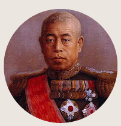
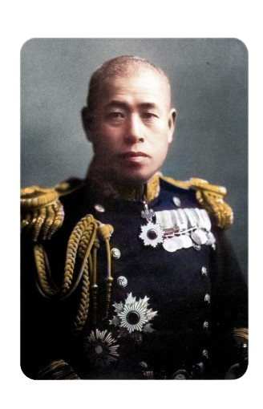

Nascido a 4 de Abril, sexto filho do diretor de uma escola, foi posto para adoção. Foi adotado pela
família Yamamoto. Em 1919, deixou o Japão e entrou para a Universidade de Harvard nos Estados
Unidos. Essa experiência o fez discordar de uma eventual guerra contra os Estados Unidos,
ardorosamente defendida pelos militares japoneses.
Em 1939, para sua surpresa, foi nomeado Almirante mesmo sendo contra a guerra com os americanos e
foi ignorado quanto a urgência de uma declaração de guerra antes do ataque em Pearl Harbor.
Imediatamente, ponderou sobre os novos paradigmas da guerra naval. "Sob meu comando...", disse ele
ao ser empossado, "...dar-se-á prioridade ao treinamento aéreo", ou seja, Yamamoto defendia
ardorosamente o uso de porta-aviões em operações avançadas. Assim sendo, planejou o ataque a Pearl
Harbor, perpetrado na manhã de 7 de dezembro de 1941, que desencadeou uma mobilização
político-industrial-militar irresistível para o Império Japonês.
Pouco mais de seis meses depois, Yamamoto sofreria uma derrota de proporções catastróficas na
Batalha de Midway. Nesta, foram afundados os porta-aviões Akagi, Kaga, Hiryū e Sōryū todos
veteranos de Pearl Harbor. Somente Yamamoto foi o único não-germânico a ganhar a Cruz de Ferro com
Folhas de Carvalho e Espadas pelo sucesso do Ataque a Pearl Harbor.
Yamamoto não viveu para testemunhar a derrota japonesa. Em 1943, a 18 de abril, de manhã cedo, morre
ao dirigir-se para a inspecção de bases militares. Seria uma visita de inspeção a várias bases nas
Ilhas Salomão. A visita duraria um dia e pretendia elevar o moral das tropas e ao mesmo tempo
inspecionar as bases sob seu comando.
No entanto a 8ª Frota Japonesa havia difundido uma mensagem sobre o seu itinerário. Tal mensagem,
cifrada no Código JN-25, utilizado nas comunicações militares e das grandes unidades navais,
havia sido interceptada e decifrada pela Marinha Americana.
Com a mensagem em mãos o almirante Chester W. Nimitz e seu estado maior analisaram a oportunidade e
a possibilidade de realizar um ataque contra a formação que o conduziria. Tal ataque ficou
conhecido pelo codinome "Operação Vingança".
O avião em que seguia foi interceptado por 16 caças Lockheed P-38 Lightning americanos comandados
pelo major Mitchell, comandante do 339.º Esquadrão de Caças baseado em Guadalcanal, e foi abatido,
caindo nas selvas da ilha de Bougainville, no arquipélago das Ilhas Salomão.
Yamamoto seguia com mais dois oficiais de alta patente num bombardeiro Mitsubishi G4M, com uma
escolta de dois grupos de caças A6M Zero. No dia seguinte, seu corpo foi resgatado por uma patrulha
australiana, a causa de sua morte foram ferimentos a bala e, ele ainda tinha sua espada em
mãos.
No Japão, apesar da morte de Yamamoto ter ocorrido no dia 18 de abril, o povo japonês somente foi
informado da morte em 21 de maio. Ele foi substituído no comando da Frota Combinada pelo almirante
Mineichi Koga, seu amigo pessoal. A morte de Yamamoto foi um duro golpe para o moral do Japão.

Nome completo: Isoroku Yamamoto
Nascimento: 4 de abril de 1884
Morte: 18 de abril de 1943
Anos de serviço: 1904–1943
Patente: Marechal Almirante
Conflitos: Guerra Russo-Japonesa e as duas grandes guerras
